Teknik Oda kariyerini canlı okur. Kimi satmamalısın, kimi almalısın, hangi sözleşme riskli; kararı verirken yanında söyler.Teknik Oda reads your career live. Who not to sell, who to sign, which contract is a risk: it tells you at the moment you decide.O Teknik Oda lê sua carreira ao vivo. Quem não vender, quem contratar, qual contrato é um risco: ele avisa na hora em que você decide.Teknik Oda membaca kariermu secara langsung. Siapa yang jangan dijual, siapa yang perlu dibeli, kontrak mana yang berisiko: dia memberi tahu tepat saat kamu memutuskan.Teknik Oda liest deine Karriere live mit. Wen du nicht verkaufen solltest, wen du verpflichten solltest, welcher Vertrag ein Risiko ist: Es sagt es dir in dem Moment, in dem du entscheidest.Teknik Oda lit votre carrière en direct. Qui ne pas vendre, qui recruter, quel contrat est un risque : il vous le dit au moment où vous décidez.Teknik Oda lee tu carrera en directo. A quién no vender, a quién fichar, qué contrato es un riesgo: te lo dice justo cuando decides.Teknik Oda legge la tua carriera dal vivo. Chi non vendere, chi ingaggiare, quale contratto è un rischio: te lo dice nel momento in cui decidi.
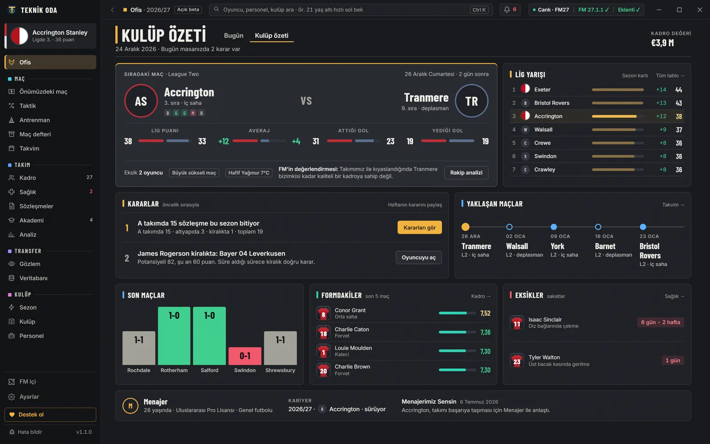
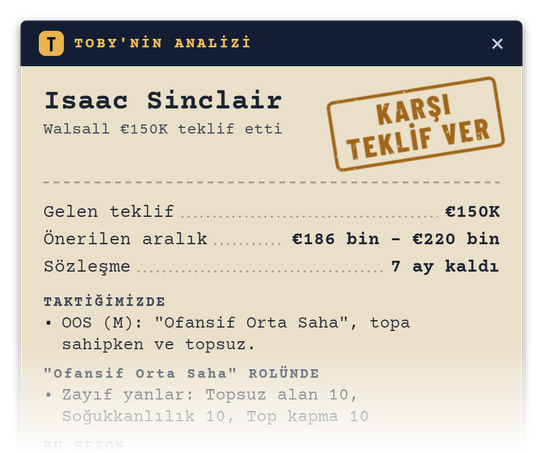
Antrenman planın ve maç ayarın tek tıkla FM'e gider, tek tıkla geri alınır. Teknik Oda yine kendiliğinden yazmaz: FM'de bir şey "FM'e uygula"ya basınca değişir; tek istisna, maç bitince maç ayarının eski ayarlarına dönmesidir.Your training plan and match settings go to FM in one click and come back in one click. Teknik Oda still never writes on its own: something in FM changes when you press "Apply to FM"; the one exception is the match settings going back to your old ones after the match.Seu plano de treino e os ajustes de jogo vão para o FM com um clique e voltam com um clique. O Teknik Oda continua sem gravar por conta própria: algo no FM muda quando você aperta "Aplicar no FM"; a única exceção é o ajuste de jogo voltar aos ajustes antigos depois da partida.Rencana latihan dan pengaturan pertandinganmu masuk ke FM dengan satu klik dan kembali dengan satu klik. Teknik Oda tetap tidak pernah menulis sendiri: sesuatu di FM berubah saat kamu menekan "Terapkan ke FM"; satu-satunya pengecualian adalah pengaturan pertandingan yang kembali ke pengaturan lamamu setelah pertandingan selesai.Dein Trainingsplan und deine Spieleinstellungen gehen mit einem Klick in FM und kommen mit einem Klick zurück. Teknik Oda schreibt weiterhin nie von selbst: In FM ändert sich etwas, wenn du „Auf FM anwenden“ drückst; die einzige Ausnahme ist, dass die Spieleinstellungen nach dem Spiel auf deine alten zurückgehen.Votre plan d'entraînement et vos réglages de match passent dans FM en un clic et reviennent en un clic. Teknik Oda n'écrit toujours pas de lui-même : dans FM, quelque chose change lorsque vous appuyez sur « Appliquer à FM » ; la seule exception est le retour des réglages de match à vos anciens réglages après le match.Tu plan de entrenamiento y los ajustes de partido pasan a FM con un clic y vuelven con otro. Teknik Oda sigue sin escribir nunca por su cuenta: algo en FM cambia cuando pulsas “Aplicar a FM”; la única excepción es que los ajustes de partido vuelven a los anteriores después del partido.Il tuo piano di allenamento e le impostazioni partita passano in FM con un clic e tornano con un clic. Teknik Oda continua a non scrivere mai da solo: in FM qualcosa cambia quando premi «Applica a FM»; l'unica eccezione è il ritorno delle impostazioni partita alle tue vecchie dopo la partita.
Fikstüre, Taktik Etkinliğine ve yüke göre hafta hafta plan; Toby kendi haftasını seans seans FM'e yazar. Sıradaki rakibe göre takım talimatı önerileri, kanıtıyla. Her ayar FM'den geri okunur.
A week-by-week plan from fixtures, Tactical Effectiveness and load; Toby writes his own week to FM session by session. Team instruction suggestions for your next opponent, with the evidence. Every setting is read back from FM.
Plano semana a semana pelo calendário, pela Eficácia Tática e pela carga; o Toby grava a própria semana no FM sessão por sessão. Sugestões de instruções de equipe para o próximo adversário, com a evidência. Cada ajuste é relido do FM.
Rencana mingguan dari jadwal pertandingan, Efektivitas Taktik, dan beban latihan; Toby menulis minggunya sendiri ke FM sesi demi sesi. Saran instruksi tim untuk lawan berikutnya, lengkap dengan buktinya. Setiap pengaturan dibaca ulang dari FM.
Ein Plan Woche für Woche aus Spielplan, Taktischer Effektivität und Belastung; Toby schreibt seine eigene Woche Einheit für Einheit in FM. Vorschläge für Mannschaftsanweisungen gegen deinen nächsten Gegner, mit den Belegen. Jede Einstellung wird aus FM zurückgelesen.
Un plan semaine par semaine à partir du calendrier, de l'Efficacité tactique et de la charge ; Toby écrit sa propre semaine dans FM séance par séance. Des suggestions de consignes d'équipe pour votre prochain adversaire, avec les preuves. Chaque réglage est relu depuis FM.
Un plan semana a semana a partir del calendario, la Efectividad táctica y la carga; Toby escribe su propia semana en FM sesión por sesión. Sugerencias de instrucciones de equipo para tu próximo rival, con las pruebas. Cada ajuste se vuelve a leer desde FM.
Un piano settimana per settimana da calendario, Efficacia tattica e carico; Toby scrive in FM la sua settimana sessione per sessione. Suggerimenti di istruzioni di squadra per il tuo prossimo avversario, con le prove. Ogni impostazione viene riletta da FM.
Anlayışın sekiz alanı ve en zayıf olanlar. Toby etkinliği oyun günü oyun günü kaydeder; yükseliyorsa eşiğe kaç hafta kaldığını, yerinde sayıyorsa olası nedenini söyler.
The eight areas of understanding and the weakest ones. Toby records effectiveness match day by match day: if it is rising, he says how many weeks to the threshold; if it is flat, the likely reason.
As oito áreas de compreensão e as mais fracas. O Toby registra a eficácia jogo a jogo: se está subindo, diz quantas semanas faltam para o limite; se está parada, o provável motivo.
Delapan area pemahaman dan area yang paling lemah. Toby mencatat efektivitas dari matchday ke matchday: kalau naik, dia bilang berapa minggu lagi menuju ambang batas; kalau mandek, dia sebut kemungkinan penyebabnya.
Die acht Verständnisbereiche und die schwächsten davon. Toby hält die Effektivität Spieltag für Spieltag fest: Steigt sie, sagt er, in wie vielen Wochen die Schwelle erreicht ist; stagniert sie, nennt er den wahrscheinlichen Grund.
Les huit domaines de compréhension et les plus faibles d'entre eux. Toby enregistre l'efficacité journée après journée : si elle progresse, il dit en combien de semaines le seuil sera atteint ; si elle stagne, il donne la raison probable.
Las ocho áreas de comprensión y las más débiles. Toby registra la efectividad jornada a jornada: si sube, dice cuántas semanas faltan para el umbral; si se estanca, el motivo probable.
Le otto aree di comprensione e le più deboli. Toby registra l'efficacia giornata per giornata: se sale, dice quante settimane mancano alla soglia; se è ferma, il motivo probabile.
Taktik danışmanı taktiğini FM'in hazır stiliyle karşılaştırır: kaç talimat aynı, hangileri farklı.
The tactics adviser compares your tactic with FM's ready-made style: how many instructions match and which differ.
O assistente tático compara sua tática com o estilo pronto do FM: quantas instruções coincidem e quais diferem.
Asisten taktik membandingkan taktikmu dengan gaya bawaan FM: berapa instruksi yang sama dan mana yang berbeda.
Der Taktikberater vergleicht deine Taktik mit dem fertigen Stil von FM: wie viele Anweisungen übereinstimmen und welche abweichen.
Le conseiller tactique compare votre tactique au style prédéfini de FM : combien de consignes concordent et lesquelles diffèrent.
El asesor táctico compara tu táctica con el estilo predefinido de FM: cuántas instrucciones coinciden y cuáles difieren.
Il consulente tattico confronta la tua tattica con lo stile predefinito di FM: quante istruzioni coincidono e quali differiscono.
Kadro'da giden ve gelen kiralıklar ayrı gruplarda. Kiraya verdiğin oyuncu az oynuyorsa Akademi, profil ve Toby "geri çağırmayı düşün" der.
In Squad, players loaned out and loaned in sit in separate groups. If a player you loaned out is not playing much, the Academy, the profile and Toby say "consider recalling".
No Elenco, os jogadores emprestados e os que chegam por empréstimo ficam em grupos separados. Se um jogador que você emprestou joga pouco, as Categorias de base, o perfil e o Toby dizem "considere chamar de volta".
Di Skuad, pemain yang dipinjamkan dan yang dipinjam berada di kelompok terpisah. Kalau pemain yang kamu pinjamkan jarang main, Akademi, profil, dan Toby akan bilang "pertimbangkan untuk menariknya kembali".
Im Kader stehen verliehene und ausgeliehene Spieler in getrennten Gruppen. Spielt ein verliehener Spieler kaum, sagen die Akademie, das Profil und Toby „Rückruf erwägen“.
Dans l'Effectif, les joueurs prêtés et les joueurs reçus en prêt sont dans des groupes séparés. Si un joueur que vous avez prêté joue peu, le Centre de formation, le profil et Toby disent « envisagez un rappel ».
En Plantilla, los jugadores cedidos y los que llegan cedidos están en grupos separados. Si un jugador que cediste juega poco, la Cantera, el perfil y Toby dicen “valora recuperarlo”.
In Rosa, i giocatori dati in prestito e quelli presi in prestito stanno in gruppi separati. Se un giocatore che hai dato in prestito gioca poco, il Settore giovanile, il profilo e Toby dicono «valuta il richiamo».
FM'deki oyuncu profilinde Teknik Oda düğmelerini kapatabilir, şeridi kaydırabilir, logoyu gizleyebilirsin. Eklentiyi FM'in içinden de kaldırabilirsin.
On a player's profile in FM you can switch the Teknik Oda buttons off, move the strip and hide the logo. You can also remove the plugin from inside FM.
No perfil do jogador no FM você pode desligar os botões do Teknik Oda, mover a faixa e esconder o logo. Também dá para remover o plugin de dentro do FM.
Di profil pemain di FM, kamu bisa mematikan tombol Teknik Oda, memindahkan strip, dan menyembunyikan logo. Kamu juga bisa menghapus plugin dari dalam FM.
Im Spielerprofil in FM kannst du die Teknik-Oda-Schaltflächen abschalten, die Leiste verschieben und das Logo ausblenden. Das Plugin kannst du auch direkt in FM entfernen.
Sur le profil d'un joueur dans FM, vous pouvez désactiver les boutons Teknik Oda, déplacer la barre et masquer le logo. Vous pouvez aussi supprimer le plugin depuis FM.
En el perfil de un jugador en FM puedes desactivar los botones de Teknik Oda, mover la barra y ocultar el logo. También puedes quitar el plugin desde dentro de FM.
Sul profilo di un giocatore in FM puoi disattivare i pulsanti di Teknik Oda, spostare la barra e nascondere il logo. Puoi anche rimuovere il plugin dall'interno di FM.
Oyuncu profilinde seçili mevkinin rolü için numaralı adımlar mini sahada. FM'in rol açıklaması olan 86 rolün hepsinde var; adımlar FM'in kendi açıklamasına dayanır, konumlar şematiktir.
On the player profile, numbered steps for the selected position's role on a mini pitch. All 86 roles that FM describes have it; the steps follow FM's own description and positions are schematic.
No perfil do jogador, passos numerados da função da posição escolhida num minicampo. As 86 funções que o FM descreve têm isso; os passos seguem a descrição do próprio FM e as posições são esquemáticas.
Di profil pemain, langkah-langkah bernomor untuk peran posisi yang dipilih di lapangan mini. Semua 86 peran yang dijelaskan FM punya fitur ini; langkahnya mengikuti deskripsi FM sendiri dan posisinya bersifat skematis.
Im Spielerprofil zeigt ein Minifeld nummerierte Schritte für die Rolle der gewählten Position. Alle 86 Rollen, die FM beschreibt, haben sie; die Schritte folgen der Beschreibung von FM selbst, die Positionen sind schematisch.
Sur le profil du joueur, des étapes numérotées sur un mini-terrain pour le rôle du poste choisi. Les 86 rôles que FM décrit l'ont ; les étapes suivent la description de FM et les positions sont schématiques.
En el perfil del jugador, pasos numerados sobre un minicampo para el rol de la posición elegida. Los 86 roles que FM describe lo tienen; los pasos siguen la descripción del propio FM y las posiciones son esquemáticas.
Sul profilo del giocatore, passi numerati su un mini campo per il ruolo della posizione scelta. Tutti gli 86 ruoli che FM descrive ce l'hanno; i passi seguono la descrizione di FM e le posizioni sono schematiche.
Sekiz oda tek yerde: Önümüzdeki maç, Defter, Sezon, Antrenman, Sözleşmeler, Liste, Kadro planı ve Gençler.
Eight rooms in one place: Next match, Notebook, Season, Training, Contracts, List, Squad plan and Youngsters.
Oito salas num lugar só: Próximo jogo, Caderno, Temporada, Treino, Contratos, Lista, Plano do elenco e Jovens.
Delapan ruangan di satu tempat: Pertandingan berikutnya, Catatan, Musim, Latihan, Kontrak, Daftar, Rencana skuad, dan Pemain muda.
Acht Räume an einem Ort: Nächstes Spiel, Notizbuch, Saison, Training, Verträge, Liste, Kaderplan und Jugend.
Huit pièces au même endroit : Prochain match, Carnet, Saison, Entraînement, Contrats, Liste, Plan d'effectif et Jeunes.
Ocho salas en un solo lugar: Próximo partido, Cuaderno, Temporada, Entrenamiento, Contratos, Lista, Plan plantilla y Jóvenes.
Otto stanze in un solo posto: Prossima partita, Quaderno, Stagione, Allenamento, Contratti, Lista, Piano della rosa e Giovani.
Baştan çizilmiş arayüz ve dört tema: Kömür (varsayılan), Kâğıt (Beta), Lacivert ve ★ Kor.
A redrawn interface with four themes: Charcoal (default), Paper (Beta), Navy and ★ Ember.
Interface redesenhada, com quatro temas: Carvão (padrão), Papel (Beta), Azul-marinho e ★ Brasa.
Antarmuka digambar ulang dengan empat tema: Arang (bawaan), Kertas (Beta), Biru tua, dan ★ Bara.
Eine neu gezeichnete Oberfläche mit vier Themen: Anthrazit (Standard), Papier (Beta), Marine und ★ Glut.
Une interface redessinée avec quatre thèmes : Anthracite (par défaut), Papier (Bêta), Bleu marine et ★ Braise.
Una interfaz redibujada con cuatro temas: Carbón (predeterminado), Papel (Beta), Azul marino y ★ Brasa.
Un'interfaccia ridisegnata con quattro temi: Antracite (predefinito), Carta (Beta), Blu navy e ★ Brace.
Maç öncesi kartı, oyuncu profilinde Toby'nin görüşü, maç fısıltıları ve oyuncu plakası.
A pre-match card, Toby's view on the player profile, in-match whispers and a player plate.
Cartão pré-jogo, a opinião do Toby no perfil do jogador, sussurros durante a partida e placa do jogador.
Kartu pra-pertandingan, pendapat Toby di profil pemain, bisikan saat pertandingan, dan plakat pemain.
Eine Karte vor dem Spiel, Tobys Einschätzung im Spielerprofil, Flüsterhinweise im Spiel und eine Spielerplakette.
Une carte d'avant-match, l'avis de Toby sur la fiche du joueur, des messages soufflés pendant le match et une plaque de joueur.
Una tarjeta previa al partido, la opinión de Toby en el perfil del jugador, susurros durante el partido y una placa de jugador.
Una scheda pre-partita, il parere di Toby sul profilo del giocatore, i suggerimenti sussurrati durante la partita e una targhetta del giocatore.
Programı sezonun sonuna kadar tek seferde FM'e yazarsın; fikstürü bilinmeyen hafta yazılmaz. Her hafta FM'den geri okunur ve geri alınır.
Write the schedule to FM up to the end of the season in one go; a week with no known fixtures is not written. Every week is read back from FM and can be undone.
Grave o programa no FM até o fim da temporada de uma vez; uma semana sem jogos conhecidos não é gravada. Cada semana é relida do FM e pode ser desfeita.
Tulis jadwal ke FM sampai akhir musim sekaligus; minggu tanpa laga yang diketahui tidak ditulis. Setiap minggu dibaca ulang dari FM dan bisa dibatalkan.
Schreibe den Plan in einem Rutsch bis zum Saisonende in FM; eine Woche ohne bekannte Spiele wird nicht geschrieben. Jede Woche wird aus FM zurückgelesen und lässt sich rückgängig machen.
Écrivez le planning dans FM jusqu'à la fin de la saison d'un seul coup ; une semaine sans match connu n'est pas écrite. Chaque semaine est relue depuis FM et peut être annulée.
Escribe el calendario en FM hasta el final de la temporada de una vez; una semana sin partidos conocidos no se escribe. Cada semana se vuelve a leer desde FM y se puede deshacer.
Scrivi il programma in FM fino a fine stagione in un colpo solo; una settimana senza partite note non viene scritta. Ogni settimana viene riletta da FM e si può annullare.
Antrenman odasında Toby bir mentorluk grubu önerir: takımın hiyerarşisinden bir örnek oyuncu ve daha az etkili gençler. Her oyuncunun nedenini söyler, onaylarsan tek tıkla FM'e yazar; geri alması da tek tık.
In the Training room Toby suggests a mentoring group: a role model from the team hierarchy and less influential young players. He says why for each player and, once you approve, writes it to FM in one click; undoing it is one click too.
Na sala de Treino, o Toby sugere um grupo de mentoria: um exemplo da hierarquia do time e jovens menos influentes. Ele diz o motivo de cada jogador e, quando você aprova, grava no FM com um clique; para desfazer, outro clique.
Di ruang Latihan, Toby menyarankan grup mentoring: satu panutan dari hierarki tim dan pemain muda yang kurang berpengaruh. Dia menyebut alasan tiap pemain dan, setelah kamu setujui, menulisnya ke FM dengan satu klik; membatalkannya juga satu klik.
Im Trainingsraum schlägt Toby eine Mentoring-Gruppe vor: ein Vorbild aus der Hierarchie der Mannschaft und weniger einflussreiche junge Spieler. Er nennt für jeden Spieler den Grund und schreibt die Gruppe nach deiner Zustimmung mit einem Klick in FM; rückgängig machst du es genauso.
Dans la pièce Entraînement, Toby propose un groupe de tutorat : un modèle issu de la hiérarchie de l'équipe et des jeunes moins influents. Il donne la raison pour chaque joueur et, une fois que vous validez, l'écrit dans FM en un clic ; l'annulation se fait aussi en un clic.
En la sala de Entrenamiento, Toby propone un grupo de tutoría: un referente de la jerarquía del equipo y jóvenes menos influyentes. Dice el motivo de cada jugador y, cuando lo apruebas, lo escribe en FM con un clic; deshacerlo es otro clic.
Nella stanza Allenamento, Toby propone un gruppo di tutoraggio: un modello dalla gerarchia della squadra e giovani meno influenti. Spiega il motivo per ogni giocatore e, quando dai l'ok, lo scrive in FM con un clic; anche per annullare basta un clic.
Dili Ayarlar'dan seçersin. Çevirilerde yanlış bir şey görürsen Hata bildir ile yaz. FM'in ya da Windows'un yeni dillerden birindeyse uygulama kendiliğinden o dille açılır.
Pick the language in Settings. If you spot a wrong translation, tell us with Report a problem. If your FM or Windows is in one of the new languages, the app opens in it by itself.
Escolha o idioma em Configurações. Se achar uma tradução errada, avise em Informar um problema. Se o seu FM ou o Windows estiver num dos novos idiomas, o app abre nele sozinho.
Pilih bahasa di Pengaturan. Kalau kamu menemukan terjemahan yang salah, kabari kami lewat Laporkan masalah. Kalau FM atau Windows-mu memakai salah satu bahasa baru, aplikasi langsung terbuka dalam bahasa itu.
Wähle die Sprache in den Einstellungen. Fällt dir eine falsche Übersetzung auf, sag es uns über „Problem melden“. Läuft dein FM oder Windows in einer der neuen Sprachen, startet die App von selbst darin.
Choisissez la langue dans les Paramètres. Si vous repérez une mauvaise traduction, dites-le-nous avec « Signaler un problème ». Si FM ou Windows est dans l'une des nouvelles langues, l'application s'ouvre directement dans cette langue.
Elige el idioma en Ajustes. Si ves una traducción errónea, cuéntanoslo con Informar de un problema. Si tu FM o Windows está en uno de los idiomas nuevos, la aplicación se abre sola en ese idioma.
Scegli la lingua nelle Impostazioni. Se noti una traduzione sbagliata, dillo con Segnala un problema. Se FM o Windows è in una delle nuove lingue, l'app si apre da sola in quella lingua.
Sekme değiştirmek yok. Teklif gelince ya da bir oyuncuya bakarken Teknik Oda FM'in içinde kısa bir görüş kartı açar ve nedenini söyler.No alt-tabbing. When an offer arrives or you open a player, Teknik Oda shows a short view inside FM and explains why.Sem trocar de janela. Quando chega uma proposta ou você abre um jogador, o Teknik Oda mostra uma análise curta dentro do FM e explica o porquê.Tanpa alt-tab. Saat tawaran datang atau kamu membuka profil pemain, Teknik Oda menampilkan ringkasan singkat di dalam FM dan menjelaskan alasannya.Kein Alt-Tab. Kommt ein Angebot oder öffnest du einen Spieler, zeigt Teknik Oda eine kurze Ansicht direkt in FM und erklärt, warum.Pas d'Alt-Tab. Quand une offre arrive ou que vous ouvrez un joueur, Teknik Oda affiche une courte vue dans FM et explique pourquoi.Sin Alt-Tab. Cuando llega una oferta o abres a un jugador, Teknik Oda muestra una vista corta dentro de FM y explica por qué.Niente Alt-Tab. Quando arriva un'offerta o apri un giocatore, Teknik Oda mostra una vista breve dentro FM e spiega perché.
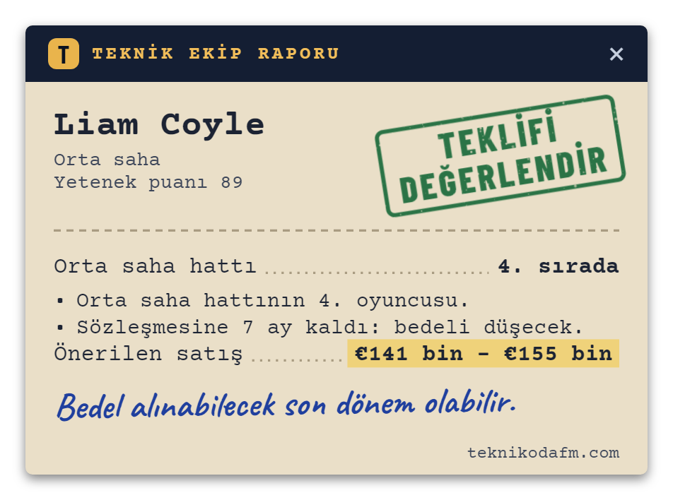
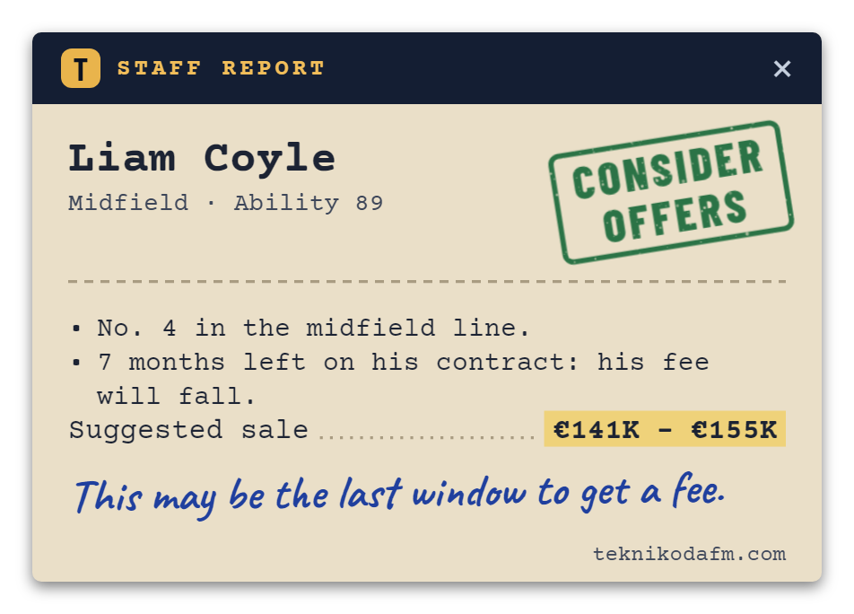
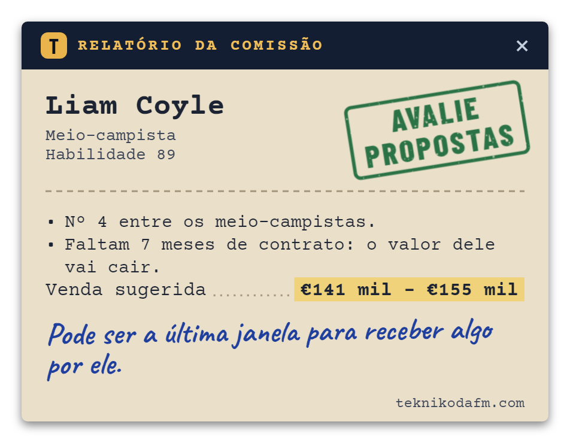
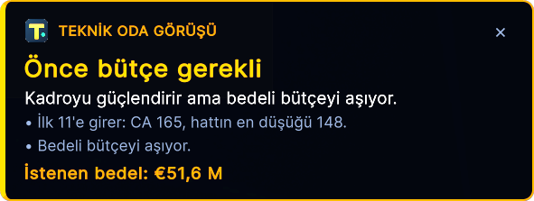
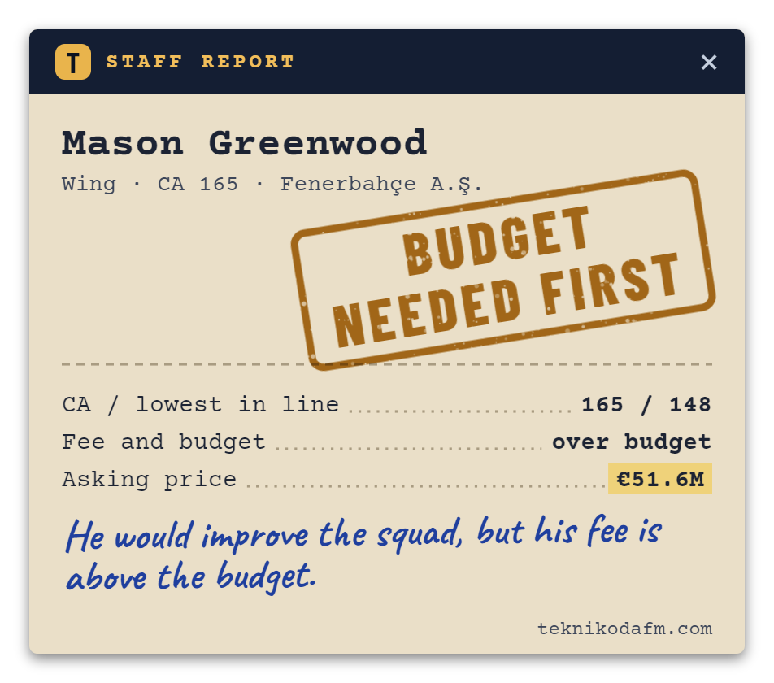
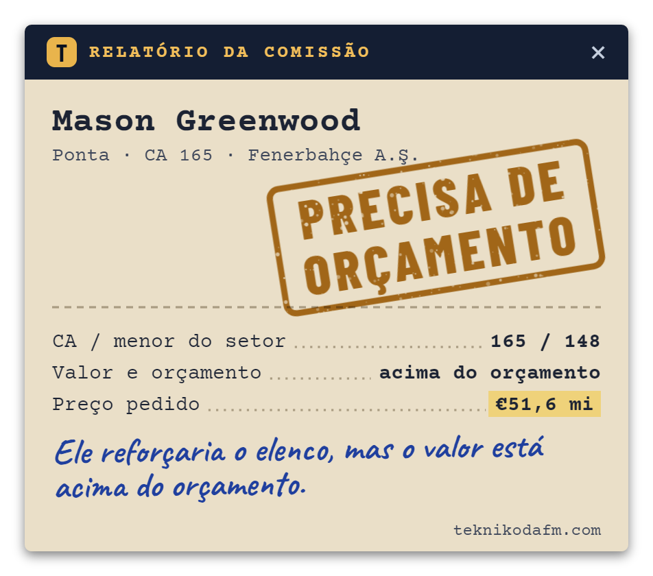
Gerçek ekran görüntüleri. Karttaki nedenler kariyerindeki veriden üretilir.Real screenshots. The reasons on each card come from your career's data.Capturas de tela reais. Os motivos de cada cartão vêm dos dados da sua carreira.Tangkapan layar asli. Alasan di setiap kartu berasal dari data kariermu.Echte Screenshots. Die Gründe auf jeder Karte stammen aus den Daten deiner Karriere.De vraies captures d'écran. Les raisons de chaque fiche viennent des données de votre carrière.Capturas reales. Los motivos de cada tarjeta salen de los datos de tu carrera.Screenshot reali. I motivi su ogni scheda vengono dai dati della tua carriera.
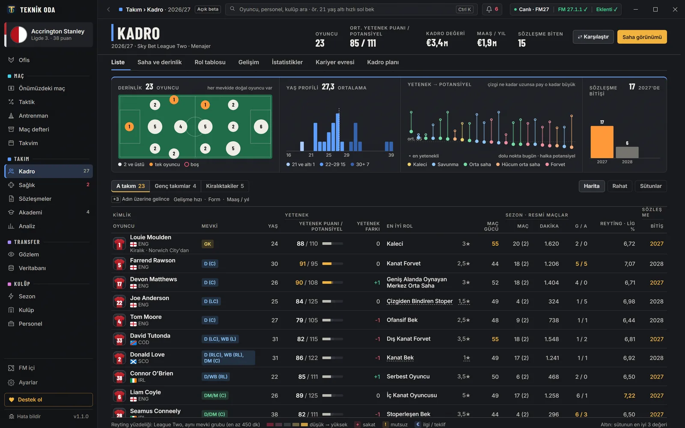
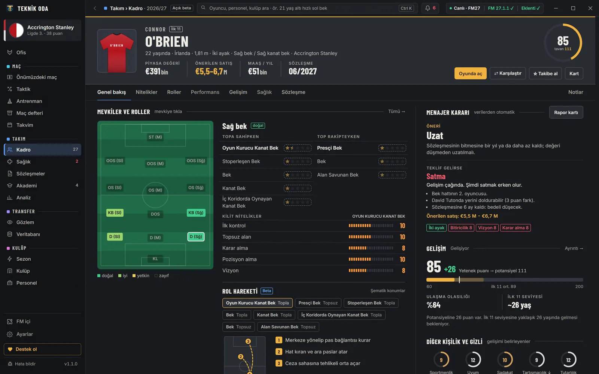
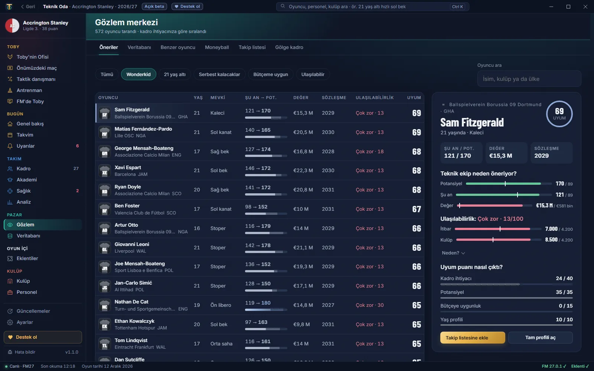
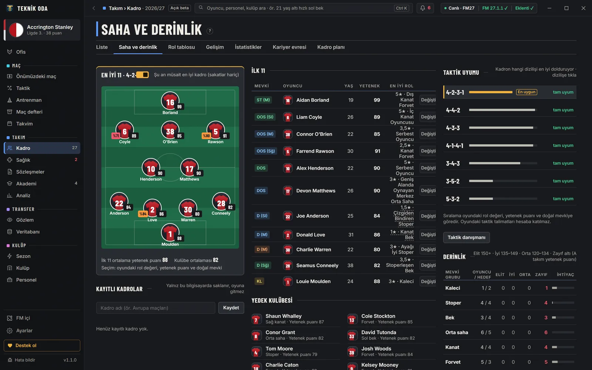
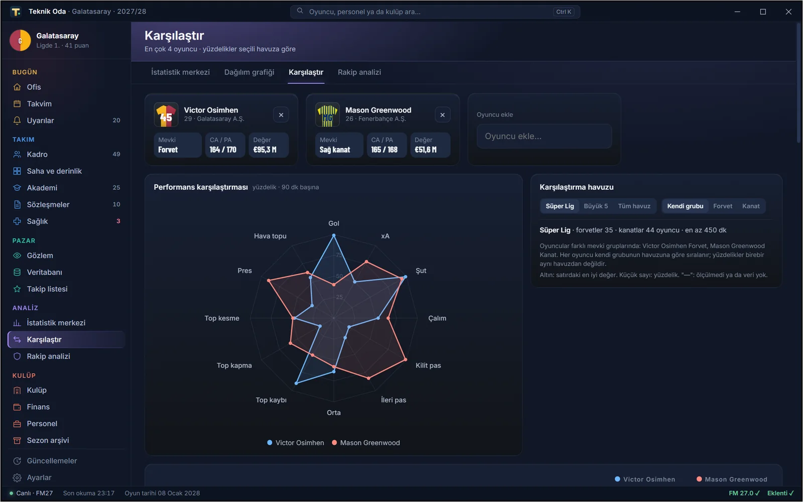
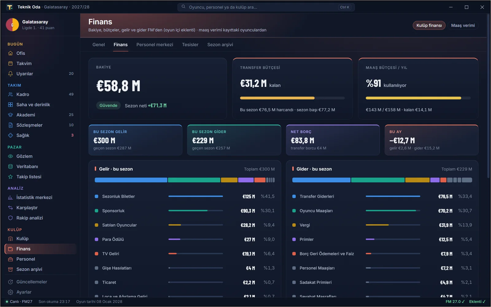
Görseli parmağınla kaydırabilirsinSwipe the image to see moreDeslize a imagem para ver maisGeser gambar untuk melihat lebih banyakBild wischen, um mehr zu sehenFaites glisser l'image pour en voir plusDesliza la imagen para ver másScorri l'immagine per vedere di più
Filtre kurmakla uğraşma. Yaş, mevki, nitelik, değer, maaş, uyruk, lig, kulüp ve sözleşme cümlenden anlaşılır, kayıttaki bütün oyuncular hemen süzülür. Türkçe, İngilizce ve Portekizce yazabilirsin.No more fiddling with filters. Age, position, attributes, value, wages, nationality, league, club and contract are read from your sentence, and every player in your save is filtered at once. Works in English, Turkish and Portuguese.Nada de montar filtros. Idade, posição, atributos, valor, salário, nacionalidade, liga, clube e contrato saem da sua frase, e todos os jogadores do seu save são filtrados na hora. Funciona em português, inglês e turco.Tidak perlu repot mengatur filter. Usia, posisi, atribut, nilai, gaji, kebangsaan, liga, klub, dan kontrak dibaca dari kalimatmu, dan semua pemain di save-mu langsung difilter. Bisa dipakai dalam bahasa Inggris, Turki, dan Portugis.Schluss mit dem Gefummel an Filtern. Alter, Position, Attribute, Wert, Gehalt, Nationalität, Liga, Verein und Vertrag werden aus deinem Satz gelesen, und alle Spieler in deinem Spielstand werden auf einmal gefiltert. Funktioniert auf Englisch, Türkisch und Portugiesisch.Fini le bricolage avec les filtres. L'âge, le poste, les attributs, la valeur, le salaire, la nationalité, le championnat, le club et le contrat sont lus dans votre phrase, et tous les joueurs de votre sauvegarde sont filtrés d'un coup. Fonctionne en anglais, en turc et en portugais.Se acabó pelearse con los filtros. La edad, la posición, los atributos, el valor, el sueldo, la nacionalidad, la liga, el club y el contrato se leen de tu frase, y todos los jugadores de tu partida se filtran a la vez. Funciona en inglés, turco y portugués.Basta smanettare con i filtri. Età, posizione, attributi, valore, stipendio, nazionalità, campionato, club e contratto vengono letti dalla tua frase, e tutti i giocatori del tuo salvataggio vengono filtrati in una volta. Funziona in inglese, turco e portoghese.
23 yaş altı hızlı sol bek, değeri 10 milyon altı
fast left back under 23, value under 10m
lateral esquerdo rápido sub-23, valor até 10 milhões
bek kiri cepat di bawah 23 tahun, nilai di bawah 10 juta
schneller linker Verteidiger unter 23, Wert unter 10 Mio.
arrière gauche rapide de moins de 23 ans, valeur sous 10 M
lateral izquierdo rápido sub-23, valor menor de 10 M
terzino sinistro veloce under 23, valore sotto i 10 mln
pası çok iyi orta saha, 21 yaş altı
midfielder with very good passing, under 21
meio-campista com passe muito bom, sub-21
gelandang dengan umpan sangat bagus, di bawah 21 tahun
Mittelfeldspieler mit sehr gutem Passspiel, unter 21
milieu avec une très bonne passe, moins de 21 ans
centrocampista con muy buen pase, sub-21
centrocampista con ottimo passaggio, under 21
sözleşmesi bitmek üzere olan stoper
centre back with an expiring contract
zagueiro com contrato terminando
bek tengah dengan kontrak hampir habis
Innenverteidiger mit auslaufendem Vertrag
défenseur central en fin de contrat
central con el contrato a punto de acabar
difensore centrale con il contratto in scadenza
Bir oyuncunun adını yaz: “Osimhen gibi forvet” ona en çok benzeyenleri benzerlik yüzdesiyle sıralar. Beğendiğin aramayı tek tıkla kaydet.Name a player: “striker like Osimhen” ranks the closest matches by similarity. Save any search with one click.Cite um jogador: “atacante parecido com o Osimhen” ordena os mais parecidos pela porcentagem de semelhança. Salve qualquer busca com um clique.Sebut nama pemain: “striker seperti Osimhen” mengurutkan yang paling mirip berdasarkan tingkat kemiripan. Simpan pencarian apa pun dengan satu klik.Nenne einen Spieler: „Stürmer wie Osimhen“ reiht die ähnlichsten Treffer nach Ähnlichkeit. Speichere jede Suche mit einem Klick.Citez un joueur : « attaquant comme Osimhen » classe les profils les plus proches par similarité. Enregistrez n'importe quelle recherche en un clic.Nombra a un jugador: “delantero como Osimhen” ordena los más parecidos por similitud. Guarda cualquier búsqueda con un clic.Nomina un giocatore: «attaccante come Osimhen» mette in ordine i più vicini per somiglianza. Salva qualsiasi ricerca con un clic.
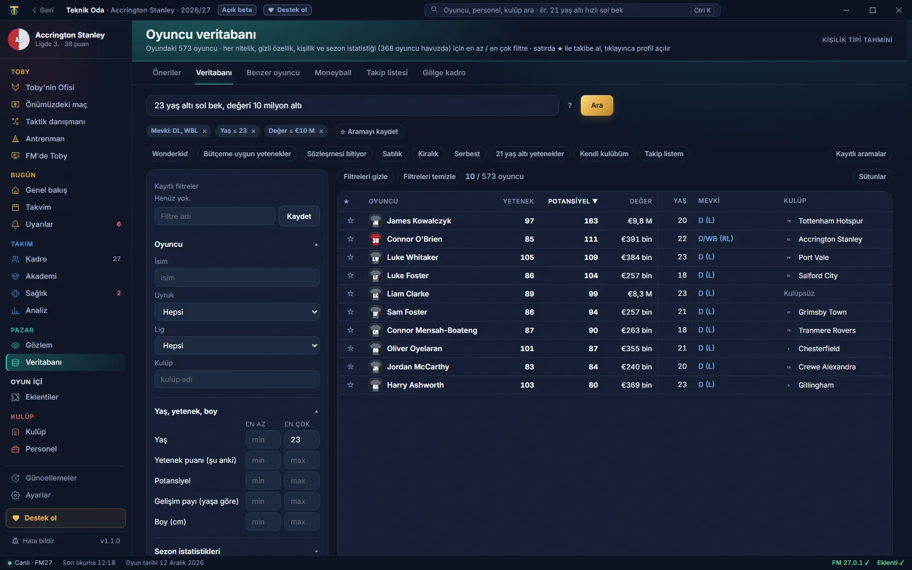
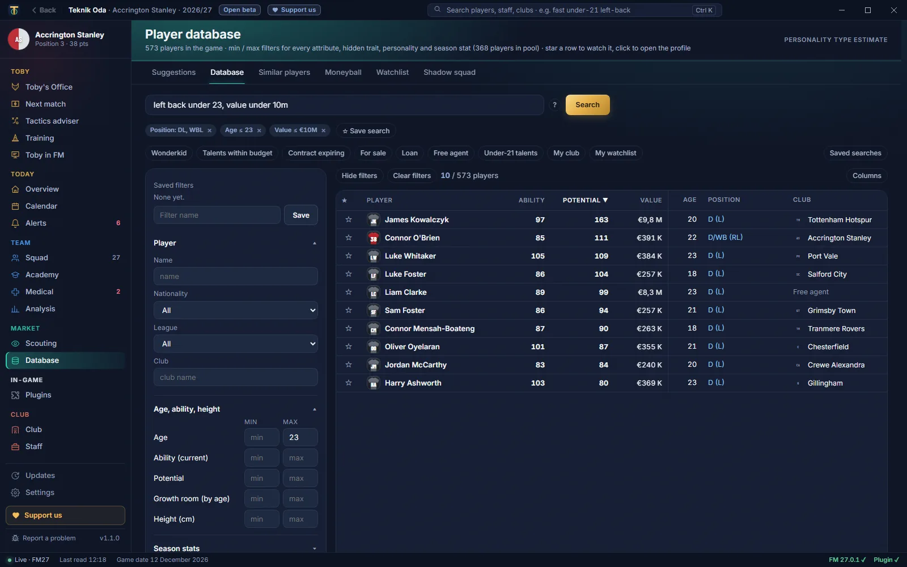
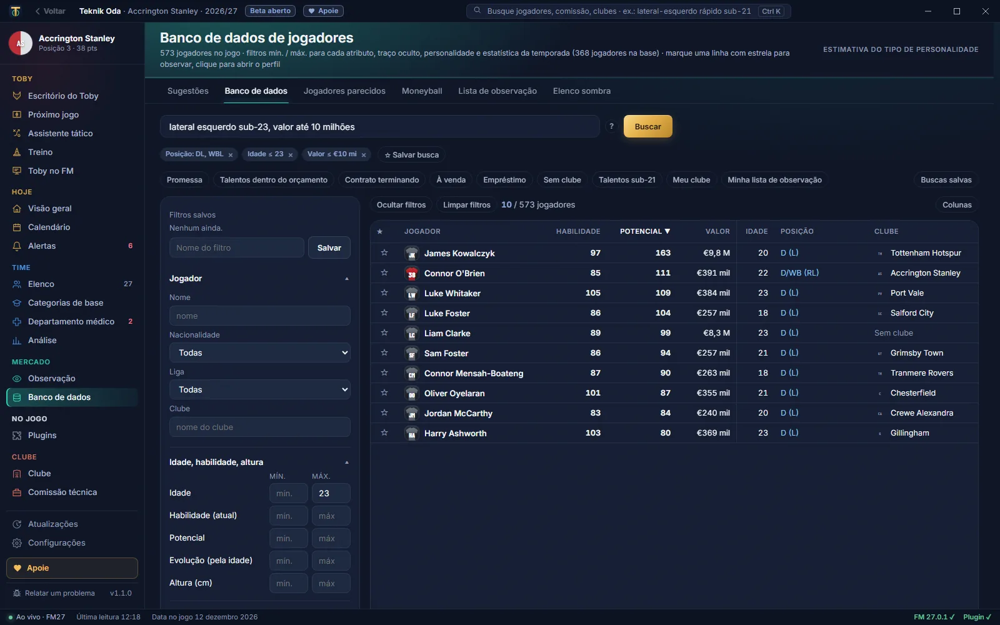
Görseli parmağınla kaydırabilirsinSwipe the image to see moreDeslize a imagem para ver maisGeser gambar untuk melihat lebih banyakBild wischen, um mehr zu sehenFaites glisser l'image pour en voir plusDesliza la imagen para ver másScorri l'immagine per vedere di più
Lig sıran, kupaların, sezonun oyuncuları ve en farklı galibiyetin tek görselde. Sezon ortasında da, sonunda da.Your league position, trophies, players of the season and biggest win on one image. Mid-season or at the end.Sua posição na liga, troféus, jogadores da temporada e maior vitória numa imagem. No meio da temporada ou no fim.Posisi ligamu, trofi, pemain musim ini, dan kemenangan terbesar dalam satu gambar. Di tengah musim atau di akhir.Deine Ligaplatzierung, Titel, Spieler der Saison und der höchste Sieg auf einem Bild. Zur Saisonmitte oder am Ende.Votre place en championnat, vos trophées, vos joueurs de la saison et votre plus large victoire sur une seule image. À mi-saison ou en fin de saison.Tu puesto en la liga, los trofeos, los jugadores de la temporada y tu mayor victoria en una imagen. A mitad de temporada o al final.Il tuo piazzamento in campionato, i trofei, i giocatori della stagione e la vittoria più larga in un'unica immagine. A metà stagione o a fine stagione.
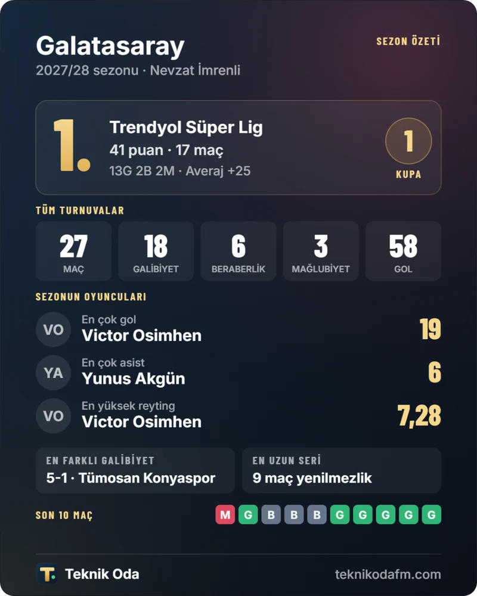
Sezon kartının yanına iki kart daha geldi. Kaydet, panoya kopyala ya da X'te hazır metinle paylaş.Two more cards join the season card. Save it, copy it or share it on X with the text ready.Mais dois cartões se juntam ao cartão da temporada. Salve, copie ou compartilhe no X com o texto pronto.Dua kartu baru bergabung dengan kartu musim. Simpan, salin, atau bagikan di X dengan teks yang sudah siap.Zwei weitere Karten ergänzen die Saisonkarte. Speichere sie, kopiere sie oder teile sie auf X mit fertigem Text.Deux autres cartes s'ajoutent à la carte de saison. Enregistrez-la, copiez-la ou partagez-la sur X avec le texte prêt.Dos tarjetas más se suman a la de temporada. Guárdala, cópiala o compártela en X con el texto listo.Altre due schede si aggiungono a quella della stagione. Salvala, copiala o condividila su X con il testo pronto.
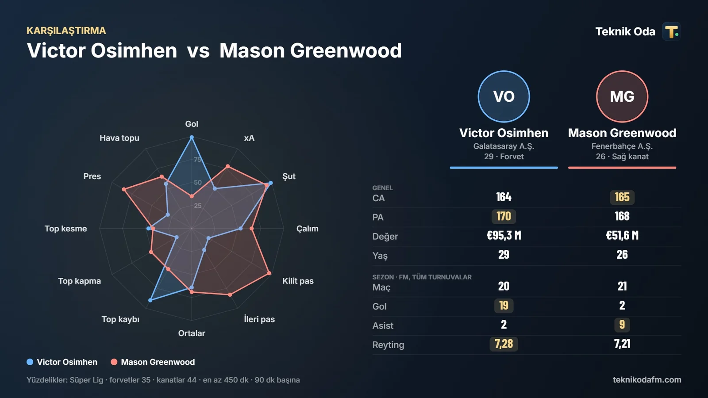
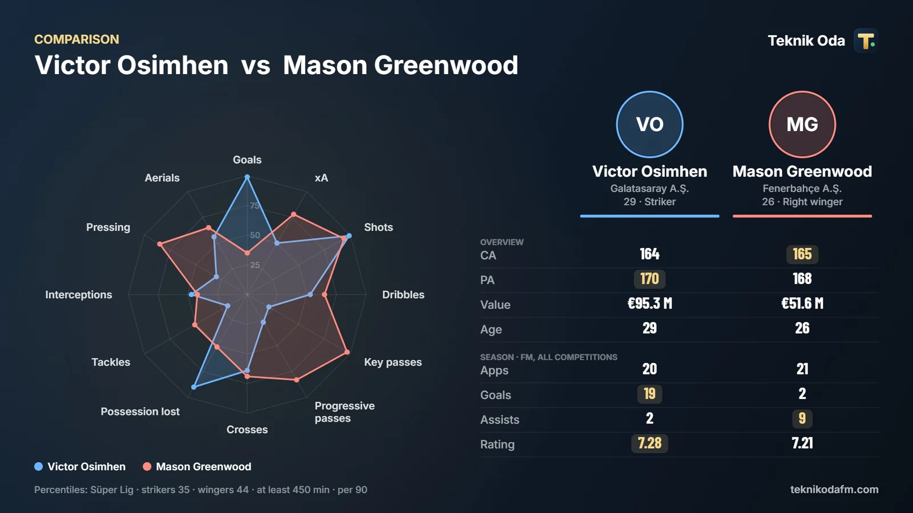
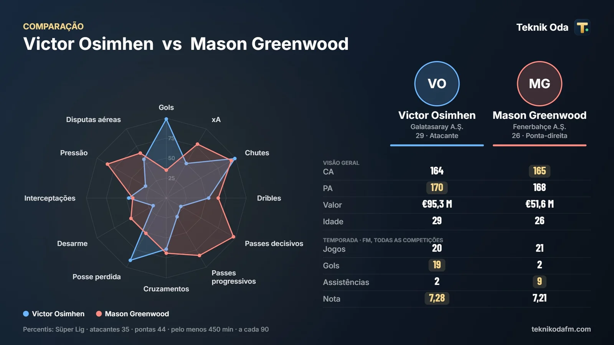
Karşılaştır ekranındaki 2–4 oyuncu: yüzdelik grafiği, CA, PA, değer ve sezon sayıları tek görselde.Two to four players from the Compare screen: percentile chart, CA, PA, value and season numbers in one image.De dois a quatro jogadores da tela Comparar: gráfico de percentis, CA, PA, valor e números da temporada numa imagem.Dua sampai empat pemain dari layar Bandingkan: grafik persentil, CA, PA, nilai, dan angka musim dalam satu gambar.Zwei bis vier Spieler aus der Ansicht „Vergleichen“: Perzentil-Diagramm, CA, PA, Wert und Saisonzahlen in einem Bild.De deux à quatre joueurs depuis l'écran Comparer : graphique de percentiles, CA, PA, valeur et chiffres de la saison dans une seule image.De dos a cuatro jugadores desde la pantalla Comparar: gráfico de percentiles, CA, PA, valor y cifras de la temporada en una sola imagen.Da due a quattro giocatori dalla schermata Confronta: grafico dei percentili, CA, PA, valore e numeri della stagione in un'unica immagine.
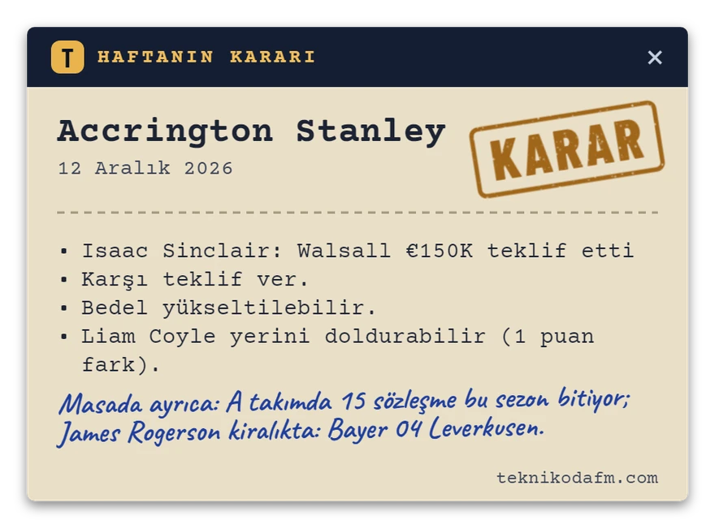
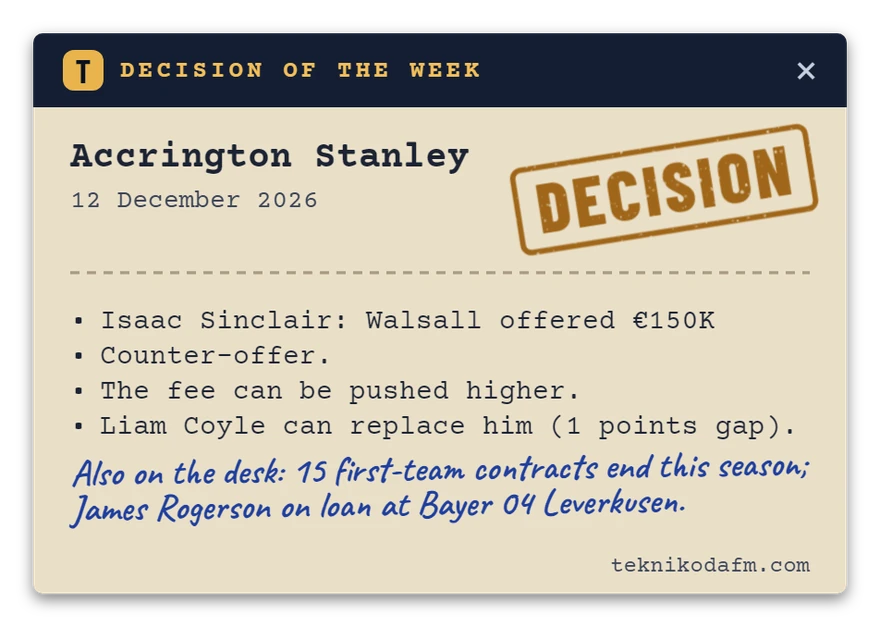
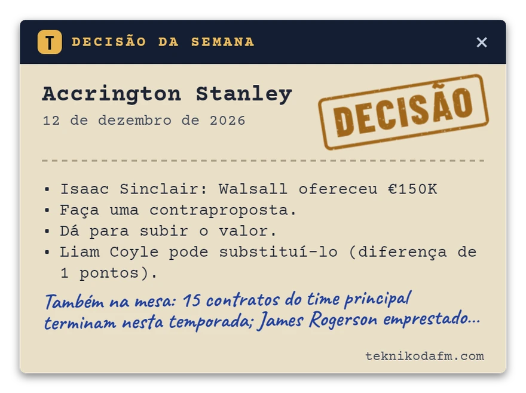
Ofis'teki öncelikli karar, FM'deki rapor kartı görünümünde. Etiket: #TeknikOdaKarariThe top decision in your Office, styled like the in-game report card. Tag: #TeknikOdaKarariA decisão prioritária do seu Escritório, no visual do relatório dentro do FM. Tag: #TeknikOdaKarariKeputusan teratas di Kantor-mu, dengan tampilan seperti kartu laporan di dalam game. Tag: #TeknikOdaKarariDie wichtigste Entscheidung in deinem Büro, gestaltet wie die Berichtskarte im Spiel. Tag: #TeknikOdaKarariLa décision la plus importante de votre Bureau, au style de la fiche de rapport du jeu. Tag : #TeknikOdaKarariLa decisión principal de tu Oficina, con el estilo de la tarjeta de informe del juego. Etiqueta: #TeknikOdaKarariLa decisione principale del tuo Ufficio, con lo stile della scheda rapporto del gioco. Tag: #TeknikOdaKarari
Toby FM'in kendi verisinden konuşur: şut haritası, hareket bölgeleri, oyuncu sayıları ve FM'de seçili taktiğin. Her sözünde sayı var, önemsizde susar.Toby speaks from FM's own data: the shot map, action zones, player numbers and the tactic you have selected in FM. Every note has its numbers, and he stays quiet when it doesn't matter.O Toby fala com os dados do próprio FM: mapa de finalizações, zonas de ação, números dos jogadores e a tática selecionada no FM. Cada nota traz os números, e ele fica quieto quando não importa.Toby berbicara dari data FM sendiri: peta tembakan, zona aksi, angka pemain, dan taktik yang kamu pilih di FM. Setiap catatan disertai angkanya, dan dia diam kalau memang tidak penting.Toby spricht aus den eigenen Daten von FM: Schusskarte, Aktionszonen, Spielerzahlen und die Taktik, die du in FM gewählt hast. Jede Anmerkung kommt mit ihren Zahlen, und er schweigt, wenn es nichts ausmacht.Toby parle à partir des données propres à FM : la carte des tirs, les zones d'action, les chiffres des joueurs et la tactique que vous avez sélectionnée dans FM. Chaque remarque a ses chiffres, et il se tait quand ça n'a pas d'importance.Toby habla con los datos propios de FM: el mapa de tiros, las zonas de acción, los números de los jugadores y la táctica que has seleccionado en FM. Cada nota trae sus números, y calla cuando no importa.Toby parla con i dati propri di FM: la mappa dei tiri, le zone d'azione, i numeri dei giocatori e la tattica che hai selezionato in FM. Ogni nota ha i suoi numeri, e tace quando non conta.
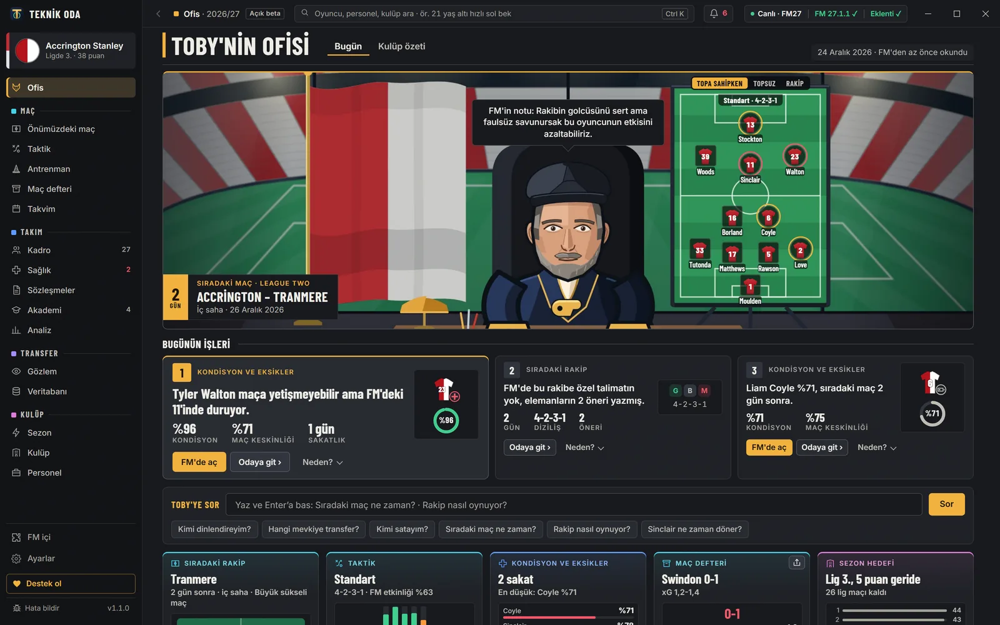
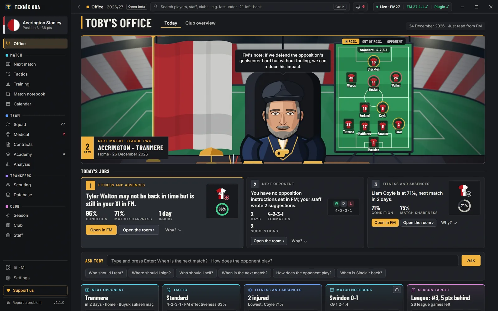
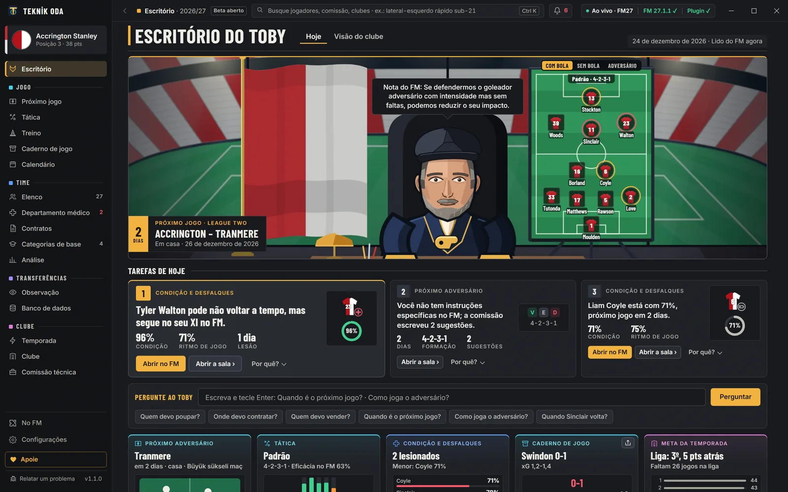
Kararı sen verirsin: Teknik Oda FM'e yalnız sen "FM'e uygula"ya basınca yazar, her değişiklik geri alınabilir.You make the call: Teknik Oda writes to FM only when you press "Apply to FM", and every change can be undone.Você decide: o Teknik Oda só grava no FM quando você aperta "Aplicar no FM", e cada mudança pode ser desfeita.Kamu yang memutuskan: Teknik Oda hanya menulis ke FM saat kamu menekan "Terapkan ke FM", dan setiap perubahan bisa dibatalkan.Du entscheidest: Teknik Oda schreibt nur in FM, wenn du „Auf FM anwenden“ drückst, und jede Änderung lässt sich rückgängig machen.Vous décidez : Teknik Oda n'écrit dans FM que lorsque vous appuyez sur « Appliquer à FM », et chaque changement peut être annulé.Tú decides: Teknik Oda solo escribe en FM cuando pulsas “Aplicar a FM”, y cada cambio se puede deshacer.Decidi tu: Teknik Oda scrive in FM solo quando premi «Applica a FM», e ogni modifica si può annullare.
Kadrona en uygun diziliş, her mevki için FM'in kendi rol yıldızlarından en iyi rol ve ilk 11'in niteliklerine göre takım talimatları. Hangi oyuncuların hangi değerine bakıldığı yanında yazar.The formation that fits your squad, the best role for every slot from FM's own role stars, and team instructions built from your first XI's attributes. Each one shows which players and values it looked at.A formação que melhor encaixa no seu elenco, a melhor função para cada posição pelas estrelas do próprio FM e instruções de equipe a partir dos atributos do time titular. Cada uma mostra quais jogadores e valores foram considerados.Formasi yang cocok dengan skuadmu, peran terbaik untuk setiap slot berdasarkan bintang peran FM sendiri, dan instruksi tim yang disusun dari atribut starting XI-mu. Masing-masing menunjukkan pemain dan nilai mana yang dipertimbangkan.Die Formation, die zu deinem Kader passt, die beste Rolle für jeden Platz nach den eigenen Rollensternen von FM und Mannschaftsanweisungen, die aus den Attributen deiner Startelf gebaut sind. Jede zeigt, welche Spieler und Werte sie betrachtet hat.La formation qui convient à votre effectif, le meilleur rôle pour chaque poste d'après les étoiles de rôle de FM, et des consignes d'équipe construites à partir des attributs de votre XI de départ. Chacune montre quels joueurs et quelles valeurs ont été examinés.La formación que encaja con tu plantilla, el mejor rol para cada puesto según las estrellas de rol del propio FM e instrucciones de equipo construidas con los atributos de tu once inicial. Cada una muestra qué jugadores y valores miró.La formazione adatta alla tua rosa, il miglior ruolo per ogni slot secondo le stelle di ruolo di FM e istruzioni di squadra costruite sugli attributi del tuo undici titolare. Ognuna mostra quali giocatori e valori ha guardato.
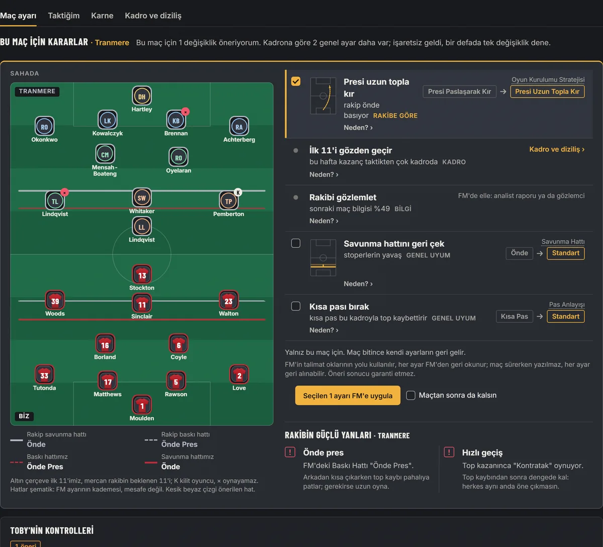
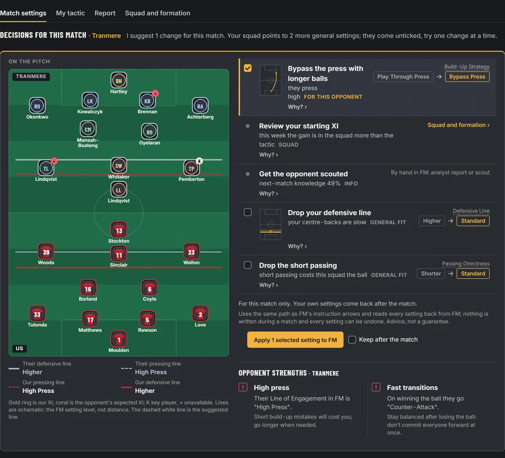
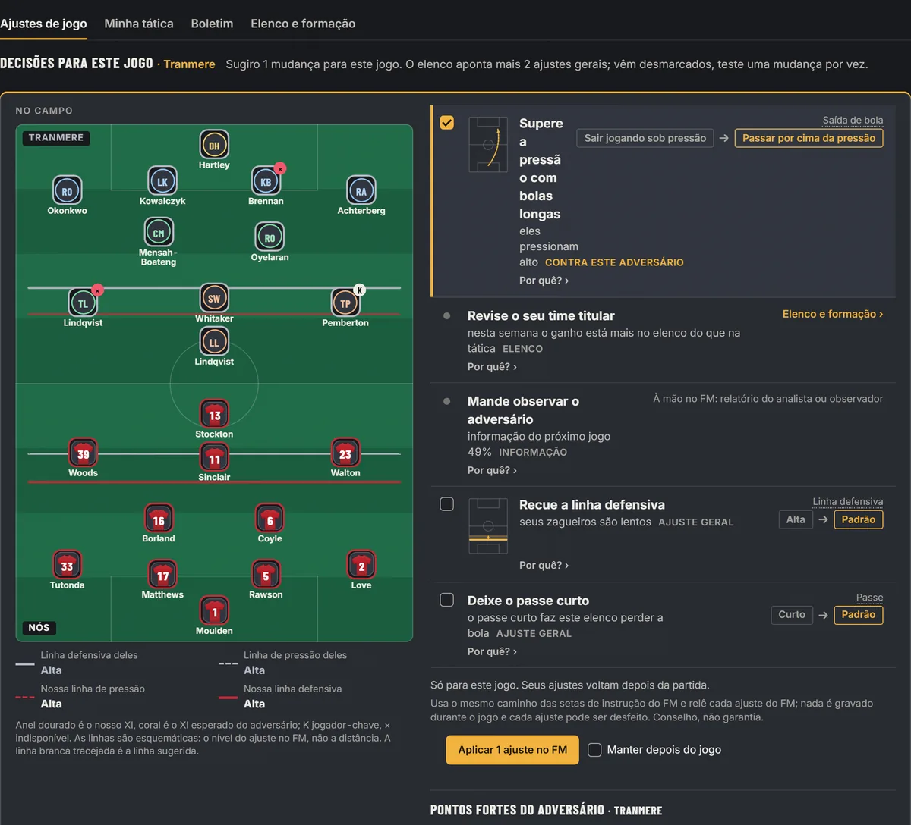
Yabancı sınırını, genç şartını ve kullandığın yabancı sınırı yamasını tanır. Ofis uyarıları, kadro sayacı ve gözlem önerileri buna göre çalışır.It knows the foreign player limit, the youth condition and your foreign limit patch. Office alerts, the squad counter and scouting follow them.Ele conhece o limite de estrangeiros, a regra dos jovens e o seu patch de limite. Os alertas do Escritório, o contador do elenco e a observação seguem essas regras.Dia tahu batas pemain asing, syarat pemain muda, dan patch batas pemain asingmu. Peringatan Kantor, penghitung skuad, dan scouting mengikuti aturan itu.Er kennt die Ausländerbegrenzung, die Jugendbedingung und deinen Patch für die Ausländergrenze. Büro-Warnungen, der Kaderzähler und das Scouting richten sich danach.Il connaît la limite de joueurs étrangers, la condition de jeunesse et votre patch de limite d'étrangers. Les alertes du Bureau, le compteur d'effectif et le recrutement les suivent.Conoce el límite de jugadores extranjeros, la condición de juventud y tu parche del límite de extranjeros. Las alertas de la Oficina, el contador de plantilla y el ojeo los siguen.Conosce il limite di stranieri, la condizione sui giovani e la tua patch del limite di stranieri. Gli avvisi dell'Ufficio, il contatore della rosa e lo scouting li seguono.
Uygulamayı kur, oyun içi eklentiyi tek tıkla ekle.
Install the app and add the in-game plugin with one click.
Instale o app e adicione o plugin no jogo com um clique.
Pasang aplikasinya dan tambahkan plugin dalam game dengan satu klik.
Installiere die App und füge das Plugin im Spiel mit einem Klick hinzu.
Installez l'application et ajoutez le plugin en jeu en un clic.
Instala la aplicación y añade el plugin del juego con un clic.
Installa l'app e aggiungi il plugin di gioco con un clic.
Kariyerini yükle. Teknik Oda kaydı kendisi okur, dışa aktarma yok.
Load your career. Teknik Oda reads it by itself, no exports.
Carregue sua carreira. O Teknik Oda lê sozinho, sem exportar nada.
Muat kariermu. Teknik Oda membacanya sendiri, tanpa ekspor.
Lade deine Karriere. Teknik Oda liest sie von selbst, ohne Exporte.
Chargez votre carrière. Teknik Oda la lit tout seul, sans exports.
Carga tu carrera. Teknik Oda la lee sola, sin exportaciones.
Carica la tua carriera. Teknik Oda la legge da solo, senza esportazioni.
Oyun ilerledikçe ekranlar ve öneriler kendiliğinden güncellenir.
Screens and advice update by themselves as you play.
As telas e os conselhos se atualizam sozinhos enquanto você joga.
Layar dan saran diperbarui sendiri saat kamu bermain.
Ansichten und Ratschläge aktualisieren sich von selbst, während du spielst.
Les écrans et les conseils se mettent à jour tout seuls pendant que vous jouez.
Las pantallas y los consejos se actualizan solos mientras juegas.
Schermate e consigli si aggiornano da soli mentre giochi.
Sırayı beta kullanıcılarının görüşleri belirleyecek.Feedback from beta users will set the order.O retorno de quem usa o beta define a ordem.Masukan dari pengguna beta akan menentukan urutannya.Das Feedback der Beta-Nutzer bestimmt die Reihenfolge.Les retours des utilisateurs de la bêta fixeront l'ordre.Los comentarios de los usuarios de la beta marcarán el orden.Il feedback degli utenti della beta stabilirà l'ordine. Oy ver ya da fikir yaz.Vote or write your idea.Vote ou escreva sua ideia.Beri suara atau tulis idemu.Stimm ab oder schreib deine Idee.Votez ou écrivez votre idée.Vota o escribe tu idea.Vota o scrivi la tua idea.
Piyasadaki teklifleri ve rakiplerin hamlelerini gösterir.
Shows the offers on the market and your rivals' moves.
Mostra as propostas no mercado e os movimentos dos rivais.
Menampilkan tawaran di pasar dan langkah para rivalmu.
Zeigt die Angebote auf dem Markt und die Schritte deiner Rivalen.
Montre les offres sur le marché et les mouvements de vos rivaux.
Muestra las ofertas del mercado y los movimientos de tus rivales.
Mostra le offerte sul mercato e le mosse dei tuoi rivali.
Kariyerindeki kupalar, rekorlar ve efsaneler.
The trophies, records and legends of your career.
Os troféus, recordes e lendas da sua carreira.
Trofi, rekor, dan legenda dari kariermu.
Die Titel, Rekorde und Legenden deiner Karriere.
Les trophées, records et légendes de votre carrière.
Los trofeos, récords y leyendas de tu carrera.
I trofei, i record e le leggende della tua carriera.
Sözleşme yenilerken, teklif hazırlarken ve gençler gelince FM'in içinde kart.
Cards inside FM when you renew a contract, prepare a bid or meet your new youngsters.
Cartões dentro do FM ao renovar contratos, preparar propostas e receber os novos jovens.
Kartu di dalam FM saat kamu memperpanjang kontrak, menyiapkan tawaran, atau bertemu pemain muda barumu.
Karten in FM, wenn du einen Vertrag verlängerst, ein Angebot vorbereitest oder deine neuen Talente kennenlernst.
Des fiches dans FM quand vous prolongez un contrat, préparez une offre ou découvrez vos nouveaux jeunes.
Tarjetas dentro de FM cuando renuevas un contrato, preparas una oferta o conoces a tus nuevos jóvenes.
Schede dentro FM quando rinnovi un contratto, prepari un'offerta o conosci i tuoi nuovi giovani.
Almanca, Fransızca, İspanyolca, İtalyanca ve Endonezce Beta'da. Çevirilerde bir yanlış görürsen Hata bildir ile yaz.
German, French, Spanish, Italian and Indonesian are in Beta. If you spot a wrong translation, tell us with Report a problem.
Alemão, francês, espanhol, italiano e indonésio estão em Beta. Se achar uma tradução errada, avise em Informar um problema.
Jerman, Prancis, Spanyol, Italia dan Bahasa Indonesia ada di Beta. Kalau kamu menemukan terjemahan yang salah, kabari kami lewat Laporkan masalah.
Deutsch, Französisch, Spanisch, Italienisch und Indonesisch sind in Beta. Fällt dir eine falsche Übersetzung auf, sag es uns über „Problem melden“.
Allemand, français, espagnol, italien et indonésien sont en bêta. Si vous repérez une mauvaise traduction, dites-le-nous avec « Signaler un problème ».
Alemán, francés, español, italiano e indonesio están en beta. Si ves una traducción errónea, cuéntanoslo con Informar de un problema.
Tedesco, francese, spagnolo, italiano e indonesiano sono in beta. Se noti una traduzione sbagliata, dillo con Segnala un problema.
Bu sürümlerde canlı doğrulama.
Live verification on these versions.
Verificação ao vivo nessas versões.
Verifikasi langsung di versi-versi ini.
Live-Prüfung auf diesen Versionen.
Vérification en direct sur ces versions.
Verificación en vivo en estas versiones.
Verifica dal vivo su queste versioni.
Çıkış öncesi sürümde uzun kariyerle denendi.
Tested on the pre-release build with a long career.
Testado na versão de pré-lançamento com uma carreira longa.
Diuji pada build pra-rilis dengan karier yang panjang.
Auf dem Pre-Release-Build mit einer langen Karriere getestet.
Testé sur la version préliminaire avec une longue carrière.
Probado en la versión preliminar con una carrera larga.
Provato sulla build pre-release con una lunga carriera.
Çıktığı gün denetliyoruz. Gerekirse uygulama kendini günceller.
We check it on release day. If needed, the app updates itself.
Verificamos no dia do lançamento. Se precisar, o app se atualiza sozinho.
Kami memeriksanya di hari rilis. Kalau perlu, aplikasi memperbarui dirinya sendiri.
Wir prüfen sie am Erscheinungstag. Falls nötig, aktualisiert sich die App selbst.
Nous la vérifions le jour de la sortie. Si besoin, l'application se met à jour toute seule.
Lo comprobamos el día del lanzamiento. Si hace falta, la aplicación se actualiza sola.
La controlliamo il giorno dell'uscita. Se serve, l'app si aggiorna da sola.
Desteği var, gerçek bilgisayarda görmedik. Oynuyorsan bize yaz.
Support is built in, not yet seen on a real PC. If you play there, tell us.
O suporte está pronto, mas ainda não foi visto num PC real. Se você joga lá, conte para nós.
Dukungannya sudah ada, tapi belum terlihat di PC sungguhan. Kalau kamu bermain di sana, kabari kami.
Die Unterstützung ist eingebaut, aber noch nicht auf einem echten PC gesehen. Wenn du dort spielst, sag es uns.
La prise en charge est intégrée, mais pas encore vue sur un vrai PC. Si vous jouez là-bas, dites-le-nous.
El soporte está integrado, pero aún no se ha visto en un PC real. Si juegas ahí, cuéntanoslo.
Il supporto è integrato, ma non ancora visto su un PC reale. Se giochi lì, faccelo sapere.
Desteği var, gerçek bilgisayarda görmedik. Oynuyorsan bize yaz.
Support is built in, not yet seen on a real PC. If you play there, tell us.
O suporte está pronto, mas ainda não foi visto num PC real. Se você joga lá, conte para nós.
Dukungannya sudah ada, tapi belum terlihat di PC sungguhan. Kalau kamu bermain di sana, kabari kami.
Die Unterstützung ist eingebaut, aber noch nicht auf einem echten PC gesehen. Wenn du dort spielst, sag es uns.
La prise en charge est intégrée, mais pas encore vue sur un vrai PC. Si vous jouez là-bas, dites-le-nous.
El soporte está integrado, pero aún no se ha visto en un PC real. Si juegas ahí, cuéntanoslo.
Il supporto è integrato, ma non ancora visto su un PC reale. Se giochi lì, faccelo sapere.
64 bit. 16 GB RAM önerilir. WebView2 yoksa kurulum ekler.
64-bit. 16 GB RAM recommended. The installer adds WebView2 if it is missing.
64 bits. 16 GB de RAM recomendados. O instalador adiciona o WebView2 se estiver faltando.
64-bit. RAM 16 GB disarankan. Installer menambahkan WebView2 kalau belum ada.
64 Bit. 16 GB RAM empfohlen. Der Installer fügt WebView2 hinzu, falls es fehlt.
64 bits. 16 Go de RAM recommandés. L'installateur ajoute WebView2 s'il manque.
64 bits. Se recomiendan 16 GB de RAM. El instalador añade WebView2 si falta.
64 bit. Consigliati 16 GB di RAM. L'installer aggiunge WebView2 se manca.
Şimdilik yalnız Windows.
Windows only for now.
Por enquanto, só Windows.
Untuk sekarang hanya Windows.
Vorerst nur Windows.
Windows uniquement pour l'instant.
Solo Windows por ahora.
Per ora solo Windows.
Hesap yok, kredi kartı yok. Bir şey ters giderse uygulamadaki "Hata bildir" düğmesi yeter.No account, no card. If something goes wrong, the "Report a problem" button in the app is all you need.Sem conta, sem cartão. Se algo der errado, o botão "Relatar um problema" no app é tudo de que você precisa.Tanpa akun, tanpa kartu. Kalau ada yang salah, tombol "Laporkan masalah" di aplikasi sudah cukup.Kein Konto, keine Karte. Geht etwas schief, genügt die Schaltfläche „Problem melden“ in der App.Pas de compte, pas de carte. Si quelque chose ne va pas, le bouton « Signaler un problème » de l'application suffit.Sin cuenta, sin tarjeta. Si algo falla, basta con el botón “Informar de un problema” de la aplicación.Niente account, niente carta. Se qualcosa va storto, basta il pulsante «Segnala un problema» nell'app.
Sürüm 1.1.1 · 79 MB · İndirme başlamazsa yedek bağlantı · Chrome indirmeyi engellerse İndirilenler'i aç (Ctrl+J), dosyanın yanındaki ⋮ menüsünden indirmeyi onayla. Windows uyarı verirse "Daha fazla bilgi", sonra "Yine de çalıştır" seç; dosya kod imzalı değil. Yardım etmek istersen beta rehberi.Version 1.1.1 · 79 MB · If the download doesn't start: backup link · If Chrome blocks the download, open Downloads (Ctrl+J) and confirm it from the ⋮ menu next to the file. If Windows shows a warning, choose "More info", then "Run anyway"; the file is not code signed. Want to help? See the beta guide.Versão 1.1.1 · 79 MB · Se o download não começar: link alternativo · Se o Chrome bloquear o download, abra Downloads (Ctrl+J) e confirme pelo menu ⋮ ao lado do arquivo. Se o Windows mostrar um aviso, escolha "Mais informações" e depois "Executar assim mesmo"; o arquivo não tem assinatura de código. Quer ajudar? Veja o guia do beta (em inglês).Versi 1.1.1 · 79 MB · Kalau unduhan tidak mulai: tautan cadangan · Kalau Chrome memblokir unduhan, buka Unduhan (Ctrl+J) dan konfirmasi dari menu ⋮ di samping file. Kalau Windows menampilkan peringatan, pilih "Info selengkapnya", lalu "Tetap jalankan"; file ini belum ditandatangani kode. Mau membantu? Lihat panduan beta (dalam bahasa Inggris).Version 1.1.1 · 79 MB · Startet der Download nicht: Ersatzlink · Blockiert Chrome den Download, öffne die Downloads (Strg+J) und bestätige ihn über das ⋮-Menü neben der Datei. Zeigt Windows eine Warnung, wähle „Weitere Informationen“ und dann „Trotzdem ausführen“; die Datei ist nicht code-signiert. Willst du helfen? Sieh dir die Beta-Anleitung an.Version 1.1.1 · 79 Mo · Si le téléchargement ne démarre pas : lien de secours · Si Chrome bloque le téléchargement, ouvrez les Téléchargements (Ctrl+J) et confirmez-le depuis le menu ⋮ à côté du fichier. Si Windows affiche un avertissement, choisissez « Informations complémentaires », puis « Exécuter quand même » ; le fichier n'est pas signé. Envie d'aider ? Consultez le guide de la bêta.Versión 1.1.1 · 79 MB · Si la descarga no empieza: enlace alternativo · Si Chrome bloquea la descarga, abre Descargas (Ctrl+J) y confírmala desde el menú ⋮ junto al archivo. Si Windows muestra una advertencia, elige “Más información” y luego “Ejecutar de todas formas”; el archivo no está firmado. ¿Quieres ayudar? Mira la guía de la beta.Versione 1.1.1 · 79 MB · Se il download non parte: link alternativo · Se Chrome blocca il download, apri i Download (Ctrl+J) e confermalo dal menu ⋮ accanto al file. Se Windows mostra un avviso, scegli «Ulteriori informazioni», poi «Esegui comunque»; il file non è firmato. Vuoi aiutare? Guarda la guida alla beta.
Dosyanın SHA-256 özetiFile SHA-256 hashHash SHA-256 do arquivoHash SHA-256 fileSHA-256-Hash der DateiEmpreinte SHA-256 du fichierHash SHA-256 del archivoHash SHA-256 del file: C65BF67C7C77AFEE4C3BDCB5BF8EBA30BFA47CF1A4A6DCFB80215EF2B84927C7 · nasıl doğrularım?how do I check it?como conferir?bagaimana cara memeriksanya?wie prüfe ich ihn?comment la vérifier ?¿cómo lo compruebo?come lo verifico?
Teknik Oda bağımsız bir proje. Desteğin, her FM güncellemesinden sonraki uyum sürümüne ve Toby'nin yeni bölümlerine gider.Teknik Oda is an independent project. Your support goes into the compatibility update after every FM patch and into new parts of Toby.O Teknik Oda é um projeto independente. Seu apoio vai para a atualização de compatibilidade após cada patch do FM e para novas partes do Toby.Teknik Oda adalah proyek independen. Dukunganmu dipakai untuk pembaruan kompatibilitas setelah setiap patch FM dan untuk bagian-bagian baru Toby.Teknik Oda ist ein unabhängiges Projekt. Deine Unterstützung fließt in das Kompatibilitätsupdate nach jedem FM-Patch und in neue Teile von Toby.Teknik Oda est un projet indépendant. Votre soutien va à la mise à jour de compatibilité après chaque patch de FM et aux nouveautés de Toby.Teknik Oda es un proyecto independiente. Tu apoyo se destina a la actualización de compatibilidad tras cada parche de FM y a nuevas partes de Toby.Teknik Oda è un progetto indipendente. Il tuo sostegno va all'aggiornamento di compatibilità dopo ogni patch di FM e alle nuove parti di Toby.
Destek isteğe bağlıdır.Support is optional.O apoio é opcional.Dukungan bersifat opsional.Unterstützung ist freiwillig.Le soutien est facultatif.El apoyo es opcional.Il sostegno è facoltativo.
Oyunu değiştirmez, yalnız veri gösterir. Gizli değerleri gösterebilir; dürüst gözlem modu başka kulüplerdeki oyuncuların potansiyel değerini gizler.
It changes nothing in your game and only shows data. It can show hidden values; honest scouting mode hides potential for players at other clubs.
Não muda nada no seu jogo, só mostra dados. Pode mostrar valores ocultos; o modo de observação honesta esconde o potencial dos jogadores de outros clubes.
Dia tidak mengubah apa pun di game-mu dan hanya menampilkan data. Dia bisa menampilkan nilai tersembunyi; mode scouting jujur menyembunyikan potensi pemain di klub lain.
Es ändert nichts an deinem Spiel und zeigt nur Daten. Es kann versteckte Werte zeigen; der ehrliche Scouting-Modus blendet das Potenzial von Spielern anderer Vereine aus.
Il ne change rien dans votre jeu et ne fait qu'afficher des données. Il peut montrer des valeurs cachées ; le mode de recrutement honnête masque le potentiel des joueurs des autres clubs.
No cambia nada en tu juego y solo muestra datos. Puede mostrar valores ocultos; el modo de ojeo honesto oculta el potencial de los jugadores de otros clubes.
Non cambia nulla nel tuo gioco e mostra solo dati. Può mostrare valori nascosti; la modalità scouting onesta nasconde il potenziale dei giocatori di altri club.
İsteğe bağlıdır. Oyun klasörüne dosya ekler; Ofis, roller, FM içindeki kart ve Oyunda aç özelliklerini açar. Ayarlar'dan ya da FM'in içinden (oyuncu profilindeki şeritte logo menüsü) kaldırılabilir.
It is optional. It adds files to the game folder and enables Office data, roles, the in-game card and Open in game. You can remove it from Settings or from inside FM (logo menu on the strip of a player's profile).
É opcional. Adiciona arquivos à pasta do jogo e ativa os dados do Escritório, as funções, o cartão dentro do jogo e Abrir no jogo. Você pode removê-lo em Configurações ou de dentro do FM (menu do logo na faixa do perfil do jogador).
Bersifat opsional. Plugin menambahkan file ke folder game dan mengaktifkan data Kantor, peran, kartu dalam game, dan Buka di game. Kamu bisa menghapusnya dari Pengaturan atau dari dalam FM (menu logo di strip profil pemain).
Es ist optional. Es legt Dateien im Spielordner ab und schaltet Büro-Daten, Rollen, die Karte im Spiel und „Im Spiel öffnen“ frei. Du kannst es in den Einstellungen oder direkt in FM entfernen (Logo-Menü auf der Leiste eines Spielerprofils).
Il est facultatif. Il ajoute des fichiers dans le dossier du jeu et active les données du Bureau, les rôles, la fiche en jeu et Ouvrir dans le jeu. Vous pouvez le supprimer depuis les Paramètres ou depuis FM (menu du logo sur la barre du profil d'un joueur).
Es opcional. Añade archivos a la carpeta del juego y activa los datos de la Oficina, los roles, la tarjeta del juego y Abrir en el juego. Puedes quitarlo desde Ajustes o desde dentro de FM (menú del logo en la barra del perfil de un jugador).
È facoltativo. Aggiunge file alla cartella del gioco e abilita i dati dell'Ufficio, i ruoli, la scheda in gioco e Apri nel gioco. Puoi rimuoverlo dalle Impostazioni o dall'interno di FM (menu del logo sulla barra del profilo di un giocatore).
FM'e kurduğun yüz ve logo paketlerinden. Paket yoksa uygulama yine çalışır: baş harf, forma ve kulüp renkleri görünür.
From the face and logo packs you installed for FM. Without packs the app still works and shows initials, shirts and club colours.
Dos pacotes de rostos e escudos que você instalou no FM. Sem pacotes o app funciona igual e mostra iniciais, camisas e cores dos clubes.
Dari paket wajah dan logo yang kamu pasang untuk FM. Tanpa paket, aplikasi tetap berfungsi dan menampilkan inisial, jersey, dan warna klub.
Aus den Gesichts- und Logopaketen, die du für FM installiert hast. Ohne Pakete funktioniert die App weiter und zeigt Initialen, Trikots und Vereinsfarben.
Des packs de visages et de logos que vous avez installés pour FM. Sans packs, l'application fonctionne quand même et affiche des initiales, des maillots et les couleurs des clubs.
De los packs de caras y logos que has instalado para FM. Sin packs, la aplicación sigue funcionando y muestra iniciales, camisetas y colores de los clubes.
Dai pack di volti e loghi che hai installato per FM. Senza pack l'app funziona comunque e mostra iniziali, maglie e colori dei club.
Ayarlar > Görünüm'de Yayın modunu açarsan menajer adın ekranlarda ve paylaşılan kartlarda görünmez.
Turn on Streaming mode in Settings > Appearance and your manager name is hidden on screen and on shared cards.
Ative o Modo transmissão em Configurações > Aparência e o seu nome de treinador some das telas e dos cartões compartilhados.
Aktifkan Mode streaming di Pengaturan > Tampilan, dan nama manajermu disembunyikan di layar dan di kartu yang dibagikan.
Schalte in Einstellungen > Darstellung den Streaming-Modus ein, dann ist dein Managername auf dem Bildschirm und auf geteilten Karten ausgeblendet.
Activez le mode stream dans Paramètres > Apparence et votre nom d'entraîneur est masqué à l'écran et sur les fiches partagées.
Activa el Modo directo en Ajustes > Apariencia y el nombre de tu entrenador se oculta en pantalla y en las tarjetas compartidas.
Attiva la Modalità streaming in Impostazioni > Aspetto e il nome del tuo allenatore viene nascosto a schermo e nelle schede condivise.
Uygulama Türkçe, İngilizce ve Portekizce; Almanca, Fransızca, İspanyolca, İtalyanca ve Endonezce Beta'da. Dili Ayarlar'dan seçersin. Bir çeviride yanlış görürsen Hata bildir ile yazman yeter.
The app is in Turkish, English and Portuguese; German, French, Spanish, Italian and Indonesian are in Beta. You pick the language in Settings. If a translation looks wrong, Report a problem is all you need.
O app está em turco, inglês e português; alemão, francês, espanhol, italiano e indonésio estão em Beta. Você escolhe o idioma em Configurações. Se uma tradução parecer errada, basta usar Informar um problema.
Aplikasinya tersedia dalam bahasa Turki, Inggris, dan Portugis; Jerman, Prancis, Spanyol, Italia dan Bahasa Indonesia ada di Beta. Kamu memilih bahasa di Pengaturan. Kalau ada terjemahan yang terlihat salah, cukup pakai Laporkan masalah.
Die App gibt es auf Türkisch, Englisch und Portugiesisch; Deutsch, Französisch, Spanisch, Italienisch und Indonesisch sind in Beta. Die Sprache wählst du in den Einstellungen. Wirkt eine Übersetzung falsch, genügt „Problem melden“.
L'application existe en turc, en anglais et en portugais ; allemand, français, espagnol, italien et indonésien sont en bêta. Vous choisissez la langue dans les Paramètres. Si une traduction vous semble fausse, « Signaler un problème » suffit.
La aplicación está en turco, inglés y portugués; alemán, francés, español, italiano e indonesio están en beta. Eliges el idioma en Ajustes. Si una traducción te parece errónea, basta con Informar de un problema.
L'app è in turco, inglese e portoghese; tedesco, francese, spagnolo, italiano e indonesiano sono in beta. Scegli la lingua nelle Impostazioni. Se una traduzione ti sembra sbagliata, basta Segnala un problema.
Steam sürümü denendi. Epic Games ve Xbox / Game Pass desteği uygulamada var ama gerçek bilgisayarda henüz denenmedi. Bu sürümlerde oynuyorsan bize yazman çok değerli.
The Steam version is tested. Epic Games and Xbox / Game Pass support is built in but not yet proven on a real PC. If you play there, your feedback is especially valuable.
A versão da Steam foi testada. O suporte à Epic Games e ao Xbox / Game Pass está pronto, mas ainda não foi comprovado num PC real. Se você joga lá, sua opinião vale ainda mais.
Versi Steam sudah diuji. Dukungan untuk Epic Games dan Xbox / Game Pass sudah ada tapi belum terbukti di PC sungguhan. Kalau kamu bermain di sana, masukanmu sangat berharga.
Die Steam-Version ist getestet. Die Unterstützung für Epic Games und Xbox / Game Pass ist eingebaut, aber noch nicht auf einem echten PC erprobt. Wenn du dort spielst, ist dein Feedback besonders wertvoll.
La version Steam est testée. La prise en charge d'Epic Games et de Xbox / Game Pass est intégrée, mais pas encore éprouvée sur un vrai PC. Si vous jouez là-bas, vos retours sont particulièrement précieux.
La versión de Steam está probada. El soporte para Epic Games y Xbox / Game Pass está integrado, pero aún no se ha comprobado en un PC real. Si juegas ahí, tus comentarios son especialmente valiosos.
La versione Steam è provata. Il supporto per Epic Games e Xbox / Game Pass è integrato ma non ancora verificato su un PC reale. Se giochi lì, il tuo feedback è particolarmente prezioso.
Kurulum dosyası yeni ve kod imzalı değil; Chrome ve Windows az indirilmiş dosyalarda uyarır. Chrome indirmeyi engellerse İndirilenler'i aç (Ctrl+J), dosyanın yanındaki ⋮ menüsünden indirmeyi onayla. Windows'ta "Daha fazla bilgi", sonra "Yine de çalıştır" seçmen yeterli. Ayrıntılar güvenlik sayfasında.
The installer is new and not code signed, and Chrome and Windows warn about files that few people have downloaded. If Chrome blocks the download, open Downloads (Ctrl+J) and confirm it from the ⋮ menu next to the file. On Windows, choose "More info", then "Run anyway". Details are on the security page.
O instalador é novo e não tem assinatura de código, e o Chrome e o Windows avisam sobre arquivos baixados por poucas pessoas. Se o Chrome bloquear o download, abra Downloads (Ctrl+J) e confirme pelo menu ⋮ ao lado do arquivo. No Windows, escolha "Mais informações" e depois "Executar assim mesmo". Os detalhes estão na página de segurança.
Installer-nya baru dan belum ditandatangani kode, dan Chrome serta Windows memperingatkan soal file yang jarang diunduh. Kalau Chrome memblokir unduhan, buka Unduhan (Ctrl+J) dan konfirmasi dari menu ⋮ di samping file. Di Windows, pilih "Info selengkapnya", lalu "Tetap jalankan". Rinciannya ada di halaman keamanan.
Der Installer ist neu und nicht code-signiert, und Chrome und Windows warnen vor Dateien, die nur wenige Leute heruntergeladen haben. Blockiert Chrome den Download, öffne die Downloads (Strg+J) und bestätige ihn über das ⋮-Menü neben der Datei. Wähle unter Windows „Weitere Informationen“ und dann „Trotzdem ausführen“. Einzelheiten stehen auf der Sicherheitsseite.
L'installateur est nouveau et n'est pas signé, et Chrome et Windows avertissent pour les fichiers que peu de gens ont téléchargés. Si Chrome bloque le téléchargement, ouvrez les Téléchargements (Ctrl+J) et confirmez-le depuis le menu ⋮ à côté du fichier. Sous Windows, choisissez « Informations complémentaires », puis « Exécuter quand même ». Les détails sont sur la page sécurité.
El instalador es nuevo y no está firmado, y Chrome y Windows avisan de los archivos que pocas personas han descargado. Si Chrome bloquea la descarga, abre Descargas (Ctrl+J) y confírmala desde el menú ⋮ junto al archivo. En Windows, elige “Más información” y luego “Ejecutar de todas formas”. Los detalles están en la página de seguridad.
L'installer è nuovo e non è firmato, e Chrome e Windows avvisano per i file scaricati da poche persone. Se Chrome blocca il download, apri i Download (Ctrl+J) e confermalo dal menu ⋮ accanto al file. Su Windows scegli «Ulteriori informazioni», poi «Esegui comunque». I dettagli sono nella pagina sulla sicurezza.
Yamalar uygulamayı kısa süre durdurabilir. Uygulama bunu fark edip uyarır ve uyum güncellemesi gelir. Güncellemeler uygulamanın içinden kurulur.
Patches can stop it for a short time. The app detects this and warns you, and a compatibility update follows. Updates install from inside the app.
Patches podem pará-lo por pouco tempo. O app percebe, avisa e uma atualização de compatibilidade vem em seguida. As atualizações são instaladas de dentro do app.
Patch bisa menghentikannya sebentar. Aplikasi mendeteksinya dan memperingatkanmu, lalu pembaruan kompatibilitas menyusul. Pembaruan dipasang dari dalam aplikasi.
Patches können es kurz stoppen. Die App erkennt das und warnt dich, und ein Kompatibilitätsupdate folgt. Updates werden direkt in der App installiert.
Les patchs peuvent l'arrêter un court moment. L'application le détecte et vous prévient, puis une mise à jour de compatibilité suit. Les mises à jour s'installent depuis l'application.
Los parches pueden pararlo un tiempo corto. La aplicación lo detecta y te avisa, y después llega una actualización de compatibilidad. Las actualizaciones se instalan desde la propia aplicación.
Le patch possono fermarlo per poco tempo. L'app lo rileva e ti avvisa, poi arriva un aggiornamento di compatibilità. Gli aggiornamenti si installano dall'interno dell'app.